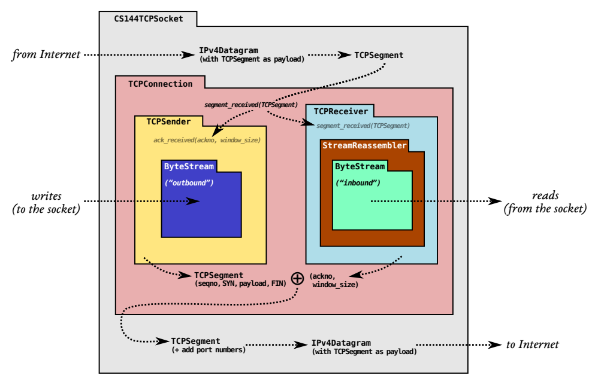

本 lab 需要实现 TCP 协议的发送端。

依然是这张图
数据结构
一个 TCPSender 应该完成以下事情：
- 跟踪接收方的窗口（处理传入的 ackno 和窗口大小）；
- 尽可能填充窗口，方法是从 ByteStream 读取，创建新的 TCP 段（如果需要，包括 SYN 和 FIN 标志），然后发送它们。发送方应继续发送段，直到窗口已满或 ByteStream 为空；
- 跟踪哪些段已发送但尚未被接收方确认——我们称这些为"未完成"的段；
- 如果自发送以来经过了足够长的时间且尚未确认，则重新发送最早未完成的段；
这就需要我们添加一系列成员变量，我的数据结构设计如下：
1 | class TCPSender { |
定时功能
这是本 lab 的第一个任务。随着时间流逝，如果最早发送的段在一定时间内未得到确认，则需要进行超时重传，而定时器的作用就是告诉 sender "超时了"，它应该有以下功能：
start()，包括设置 rto 以及重置时间进度为 0，并将定时器状态设为WORK；1
2
3
4
5void Timer::start(unsigned int rto) {
_rto = rto;
_current_time = 0;
_state = TimerState::WORK;
}stop()，将定时器状态设为IDLE；1
2
3void Timer::stop() {
_state = TimerState::IDLE;
}tick()，增加时间进度，并在超过 rto 时向调用者传递信息(true/false)；1
2
3
4bool Timer::tick(unsigned int interval) { // true for timeout, false else
_current_time += interval;
return _current_time >= _rto;
}
根据 guide，TCPSender::tick()
会被自动调用，其传入参数为距离上一次调用该方法经过的时长，那么在
TCPSender::tick() 中，我们就需要调用
Timer::tick()
并根据返回值判断是否需要重传。重传时需要做的事有：
- 重传尚未被 TCP 接收方完全确认的最早的段（如果没有的话后面啥也不用做）；
- 如果窗口大小不为零：
- 增加连续重传的次数：因为重传次数对应的就是最早未确认的段，故无需建立
序列号->重传次数的映射; - 指数退避：将 RTO 翻倍，从而减慢糟糕网络上的重传速度，以避免进一步破坏工作；
- 增加连续重传的次数：因为重传次数对应的就是最早未确认的段，故无需建立
- 重启定时器，使其在 RTO 后到期；
故 TCPSender::tick() 部分代码很容易能写出来
1 | void TCPSender::tick(const size_t ms_since_last_tick) { |
收到确认后要做什么
当收到一个正确的 ackno 时：
- 将 RTO 设置回其"初始值"（即
_initial_retransmission_timeout）； - 如果发送方有任何未完成的数据，重启定时器，使其在 RTO 毫秒（对于 RTO 的当前值）后到期；
- 反之，如果所有未完成的数据都被确认，停止定时器；
- 将重传次数重置为零；
怎样算正确的 ackno 呢？对于一个段而言，当且仅当下式满足时，该段被成功确认。
\[ \text{abs\_ackno} \geq \text{abs\_seqno} + \text{length\_in\_sequence\_space} \]
也就是说，只有部分确认的段依然被认为是"完全未确认"。
与此同时，还应满足 \(\text{abs\_ackno}\leq \text{abs\_next\_seqno}\)，否则会被认为是无效确认号。
1 | void TCPSender::ack_received(const WrappingInt32 ackno, |
如何发送段
可以简单地认为，将 segment 插入 _segments_out
队列中就算将它发出去了。
但事实上，原始代码里并没有修改 segment 首部和负载字段的
api，需要修改头文件，加上几个
set_syn()，set_fin()
之类的，方便正确创建段。
最开始(abs_next_seqno=0)的时候，由于尚未建立连接，_rws
字段会被初始化为 1 而非 0，此时要发送的段仅仅为
{SYN=1, data=""}
的同步请求段。在收到确认之后，_rws
字段会被重置，我们就需要发送数据以尽可能填满该窗口，同时数据大小又不能超过
TCPConfig::MAX_PAYLOAD_SIZE。
已经发过的数据部分在未超时的情况下不用重复发送，那么理论上
ackno 会小于等于
next_seqno，而我们之后要发的数据部分应从
next_seqno
部分开始，于是乎这里就有了发送窗口的概念，即
\[ \text{send\_window\_size} = \text{abs\_ackno} + \text{\_rws} - \text{abs\_next\_seqno} \]
这里需要注意的点是，send_window_size
指的是还可以发送多少序列号，而 TCPConfig::MAX_PAYLOAD_SIZE
指明了数据部分的字符数量，这两者的区别影响了是否需要在发送端的
ByteStream 数据读完后将 FIN 设置为
1。
如果
ByteStream已经 eof 且data.length() < send_window_size，说明还能容纳一个FIN的序列号，此时应当将FIN设为1。很可能的一个情况是剩下的数据刚好有TCPConfig::MAX_PAYLOAD_SIZE这么多，而send_window_size恰好为TCPConfig::MAX_PAYLOAD_SIZE+1甚至更多，那么不加FIN是不合适的，违背了尽可能填满的规则。
关于 FIN 还有个坑点，就是收到对 {FIN=1}
段的确认后，很可能依然满足发 FIN
段的要求，从而源源不断地发送，这就需要有一个变量来记录是否已经发过
FIN 段了，也就是上文中提到的 TCPSender::close
变量。
由于数据有大小上限，那么极有可能出现 ByteStream
还有大量数据，_rws 也还很大的情况，单独发一个
TCPConfig::MAX_PAYLOAD_SIZE
的段远远不够"填满"，此时要利用循环来不断尝试直至只能生成空段。
最后实现如下：
1 | void TCPSender::fill_window() { |
测试结果
执行以下命令进行测试：
1 | $ cd build |
测试结果如下，通过。
1 | [100%] Testing the TCP sender... |